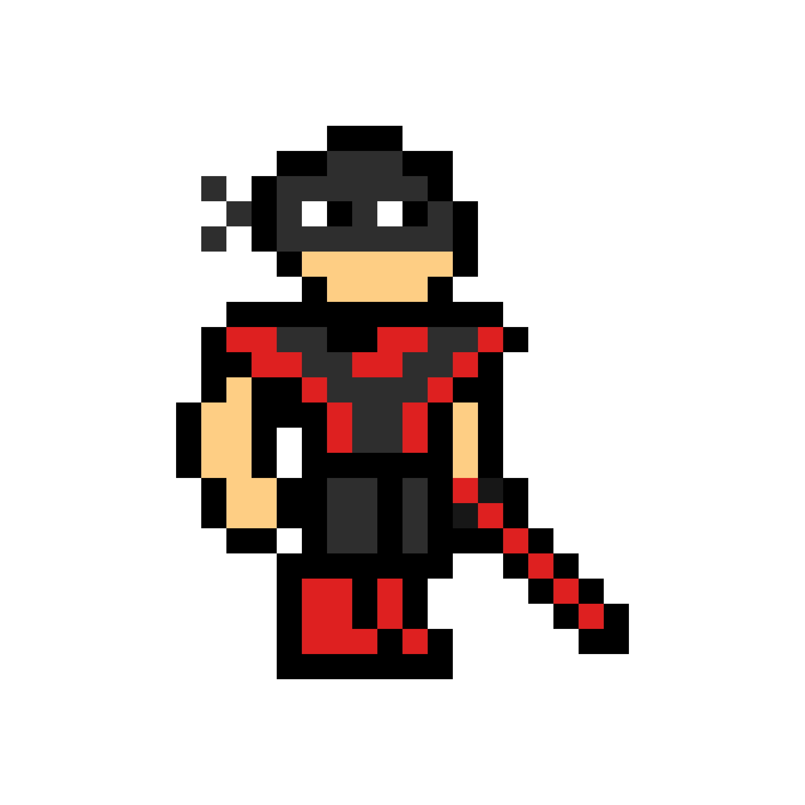
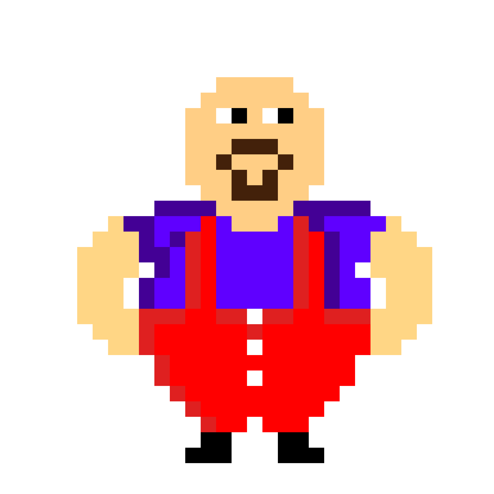
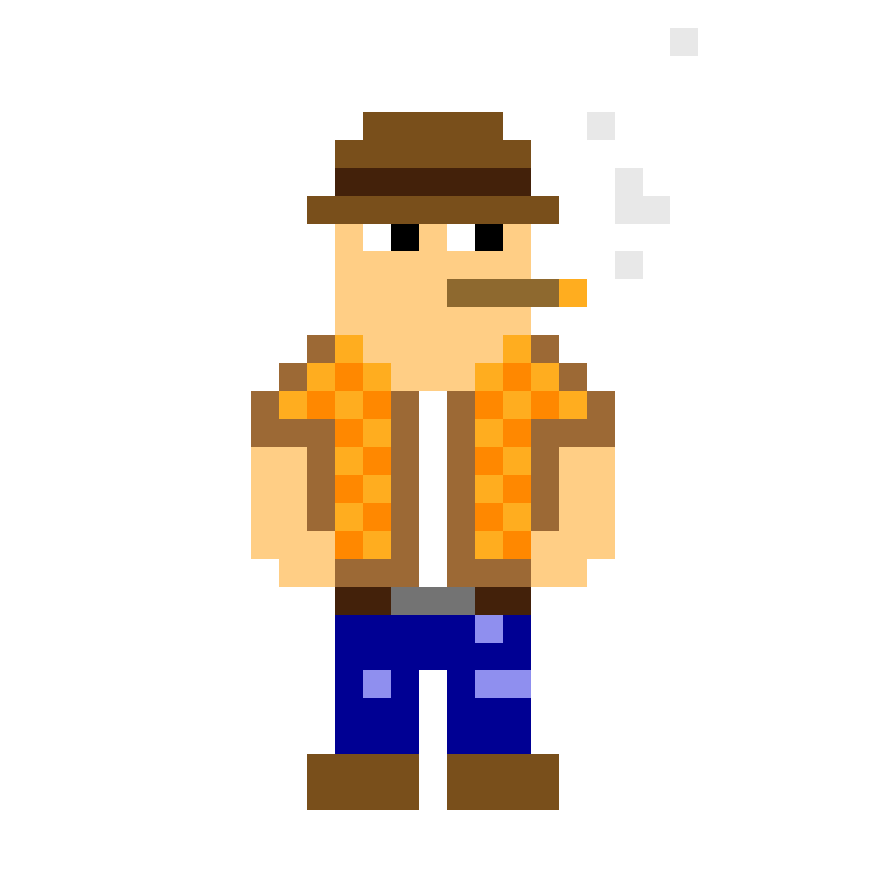
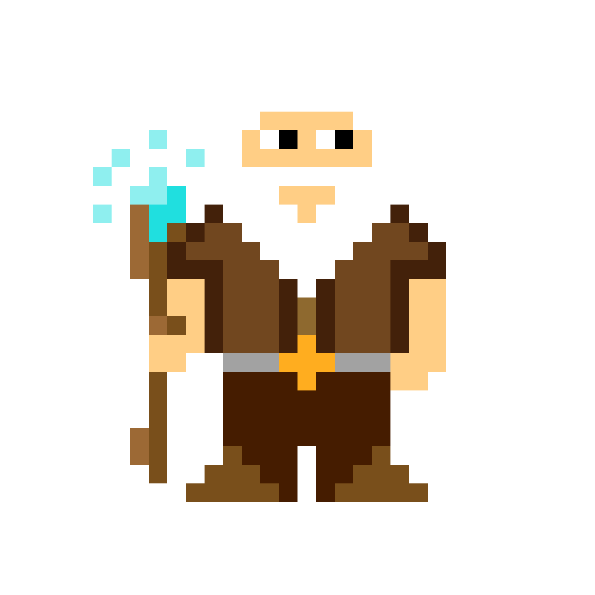
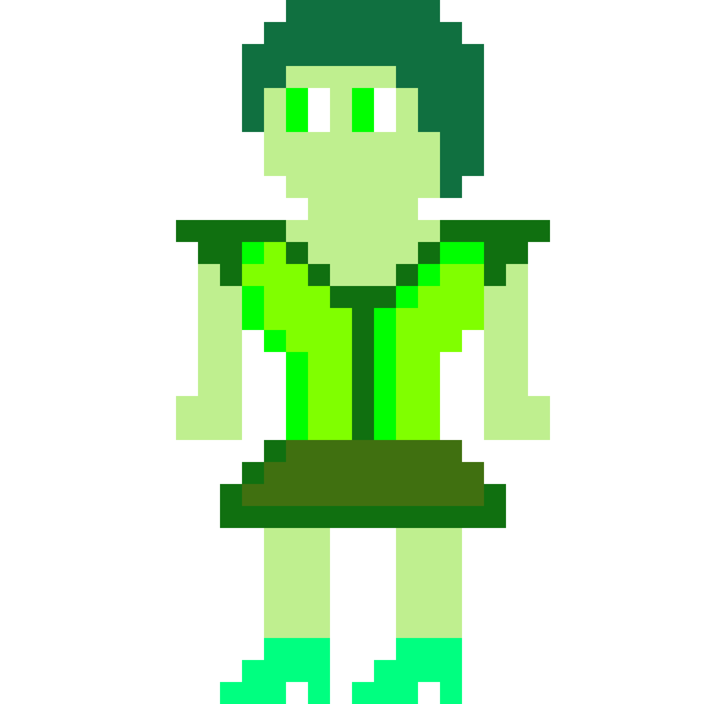
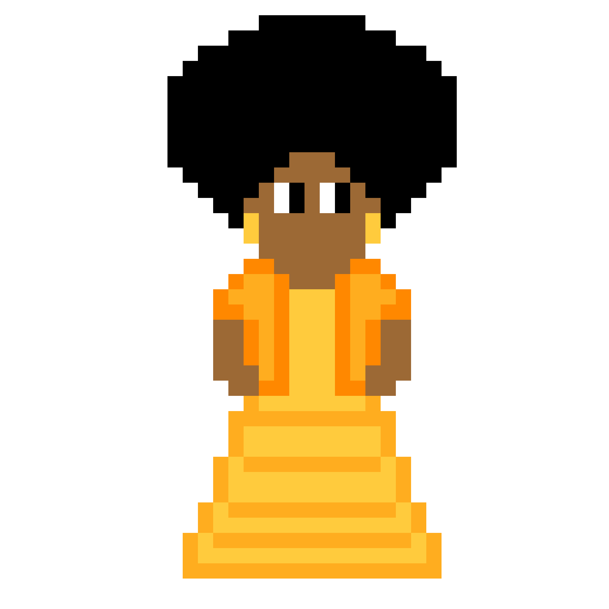
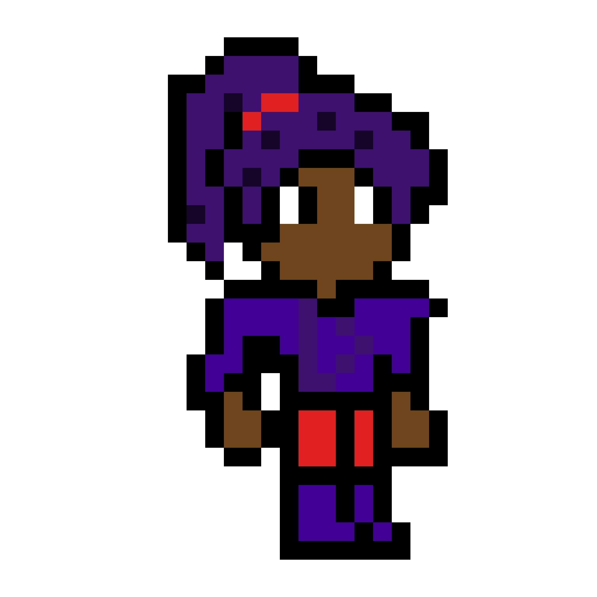

Steve
Por motivos não revelados, Steve não lembra do seu passado. A unica coisa que ele sabe, é que tem que salvar os animais do traficante Ronam. Mas Ronam tem um grande exército, tem uma super força e é super inteligente, Por isso Steve será derrotado muitas vezes. Mas ele não está sozinho, ele contará com seus companheiros da EPA(Equipe de Proteção aos Animais), eles são, Karl, Jhow, Mir, Mary, Clara, Mason e Dudinx.

Ronam
Ronam é o maior traficante de animais conhecido, isso fez com que ele se tornasse o maior rival de Steve. Ronam é um homem de visão, pouco se sabe sobre sua origem, ele tem uma força incomparável e fará qualquer coisa para que ninguém o pare. Com seu grande exército e um grande soldado lutando lutando por ele, terá muita vantagem sobre Steve.

Karl
Karl é o companheiro de missão do Steve, ele é conhecido pela sua força e sua habilidade de voar. A função de Karl não é especificamente salvar os animais, mas ele decidiu seguir Steve, pois viu sua inteligência e capacidade.
Clark
A origem de Clark é desconhecida, não se sabe ao certo de que lado ele está, só se sabe que é um grande guerreiro e o mais habilidoso do game.

Mason
Mason é o principal mentor de Steve, o ensinará estratégia, ensinara a contralar seus poderes, emoções e força. Mason é o homem que mais conhece Ronam e seu exercito, sua participação será fundamental para a evolução de Steve.

Jhow
Jhow também é mentor de Steve, mas ele o ensina a parte mais importante de um héroi, ele mostra como o mundo funciona de verdade, mostra o porque os animais devem ser salvos, mostra a importancia deles e mostra que o mundo seria melhor sem os humanos.

Mir
Mir apesar de não ser o mentor principal. Ele é o lider dos mentores, ou seja, é o lider da EPA(Equipe de Proteção aos Animais). Sabe-se que ele é o homem mais poderoso do mundo, mas ele não quer se envolver na luta contra Ronam.

Mary
Mary tem o Objetivo de proteger a Floresta Amazônia, assim como Steve tem que acabar com o trafico de animais, ela tem que acabar com o desmatamento de plantas. Ela tem poder de criar qualquer planta.

Clara
Clara odeia Steve, ela acredita que ele roubou o lugar de seu 'escolhido', por isso ela não é de confiança. Seu poder é um super raciocínio rapido.

Dudinx
Dudinx jurou lealdade a Steve e sua causa, mas algumas de suas atitudes fazem Steve duvidar. Seu poder é super velocidade.
